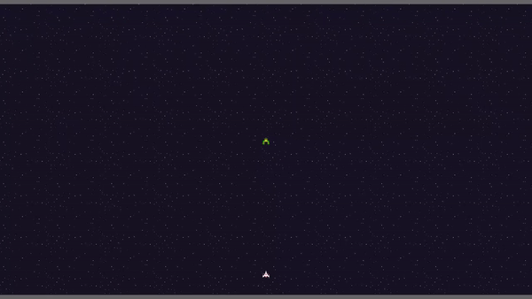

This Month in Rust GameDev #43 - February 2023
Welcome to the 43rd issue of the Rust GameDev Workgroup's monthly newsletter. Rust is a systems language pursuing the trifecta: safety, concurrency, and speed. These goals are well-aligned with game development. We hope to build an inviting ecosystem for anyone wishing to use Rust in their development process! Want to get involved? Join the Rust GameDev working group!
You can follow the newsletter creation process by watching the coordination issues. Want something mentioned in the next newsletter? Send us a pull request. Feel free to send PRs about your own projects!
- Announcements
- Game Updates
- Engine Updates
- Learning Material Updates
- Tooling Updates
- Library Updates
- Other News
- Discussions
- Requests for Contribution
Announcements
Rust GameDev Meetup

The 24th Rust Gamedev Meetup took place in February. You can watch the recording of the meetup here on Youtube. Here was the schedule from the meetup:
- Micro Game Engine - @AngelOnFira
- Graphite - @GraphiteEditor
The meetups take place on the second Saturday of every month via the Rust Gamedev Discord server and are also streamed on Twitch.
Game Updates
Cootsmania

Cootsmania (GitHub) is a multiplayer racing game made for Ludwig Jam 2023 in 10 days by @kuviman (programming), @rincs (art), and @Brainoid (music & sfx).
The game is about racing other players around Ludwig's house towards the next Coots (Ludwig's cat) location. Every round half of the players get eliminated and eventually a winner is decided.
The game is written using a custom engine: Geng.
Tunnet
 Tunnels and computer networks
Tunnels and computer networks
Tunnet (Steam, Itch.io) by @puzzled_squid is a small puzzle/exploration game where you play as a robot technician who has been tasked with building a computer network in an underground complex.
The project is implemented using the Bevy engine. It is currently under development and is expected to be released later this year. This month, the announcement trailer and the first few pages of the manual have been published on the project page.
Open Combat
Game now includes live debug window
Open Combat (Website, GitHub, Discord) is a real time tactical game which takes place during the 2nd World War.
Some major changes this month :
- A live debug window has been introduced (using egui and its ggegui integration). It allows to live-modify and adjust the gameplay of the running game.
- A big source code split has been done (see the merge request) which separated the game logic and GUI. It allows running the game logic as a standalone server and working on different game parts more easily.
- Integration of puffin to inspect performances
The developers are also working on high-definition infantry sprites integration and on a high-definition map (and are searching for graphic designer help!).
Tiny Glade

Tiny Glade is a small relaxing game about doodling castles.
@anopara and @h3r2tic recently added terrain editing. They then faced an important game design question: how would sheep handle it? Well, these cuddly little floofs are not mountain goats, so the developers gave them tiny umbrellas.
Read more in their latest Steam blogpost.
Cargo Space

Cargo Space (Discord) by @johanhelsing is a co-op 2d space game where you build a ship and fly it through space looking for new parts, fighting pirates and the environment.
The game uses its own homemade XPBD-based physics engine implemented directly using Bevy systems and types. This month the implementation was fleshed out adding important features such as collision layers, composite colliders, one-way platforms, and an efficient collision broadphase.
In other words, this means ship-to-ship collisions are finally happening. This was previously tricky, since ships are a combination of box colliders when colliding with each other and bevy_ecs_tilemap colliders (when colliding with the player).
One part of the broadphase implementation was split out into a new crate, bevy_sparse_grid_2d. It provides a simple and convenient way to query for entities that share one or more grid cells based on their axis-aligned bounding box (AABB).
Read more about Cargo Space's physics in the long and detailed blog post.
CyberGate
 Many creatures flying and casting shadows
Many creatures flying and casting shadows
CyberGate (YouTube, Discord) is an ambitious multiplayer project from CyberSoul, currently in development. With cutting-edge procedural generation and artificial intelligence, it promises to immerse players in a mysterious and enigmatic universe filled with strange creatures and hidden secrets.
The latest updates to CyberGate include:
- A rebuilt renderer, providing improved graphics and performance.
- Shadow map cascades with seamless transitions for smooth shadow rendering.
- Soft shadows for more realistic shadow effects.
- A fog effect to create atmospheric depth and immersion.
- A sky box to add visual interest and realism to the game world.
- Support for importing GLTF models, expanding the range of assets available.
Join the journey into the unknown and help shape the future of CyberGate! Join the Discord server to participate in upcoming Phase 7.0!
Legend of Worlds

Legend of Worlds (Discord, Twitter) is a cross-platform, cross-play, 2D online sandbox multiplayer experience where you can join, play, create, and share player-created worlds.
The latest dev log from Rou covers an update to the open-source game engine created for this game.
Legend of Worlds uses Toxoid Engine. Toxoid is a cross-platform, polyglot, open-source WebAssembly game engine written in Rust. The architecture has been updated so that Toxoid games can now share memory directly between WASM components, and map access to the data values rather than deserializing a set of values every time, resulting in "massive performance gains".
Hydrofoil Generation
Hydrofoil Generation (Steam, Facebook, Discord) is a realistic sailing/foiling inshore simulator in development for PC/Steam that puts you in the driving seat of modern competitive sailing.
Hydrofoil Generation released on February 16th 2023 on Steam Early Access after almost 3 years of development.
The game is written completely in Rust, using a custom engine based on DirectX 11, physics powered by Rapier-3D.
Stefano Casillo, programmer commented: "Rust delivered on every single promise. I never experienced such an uneventful launch and QA as the one we had for Hydrofoil Generation. The software stability has been impressive since the beginning of the project and confirmed the trend at release with very few problems all very easy to address".
Hydrofoil Generation currently sits at a very positive review rate of 96% on the Steam page and is praised for its challenging gameplay, performance and realistic physics.
Veloren
A cyclops attack
Veloren is an open world, open-source voxel RPG inspired by Dwarf Fortress and Cube World.
In February, swing SFX were added to the new sword abilities. Blocks were added to spots that can spawn NPCs. Moderation badges were added, and fixes to the chat command were made. A student contributed to Veloren on their two-week internship about game design, you can read about that here. Work is being done to add more functionality to sites, which are small models placed around the world.
February's full weekly devlogs: "This Week In Veloren...": #205, #206.
triverse
triverse by @cragwind is a WIP smart-pause RTS with custom unit creation on a triangle grid canvas. This month's update includes:
- Training and challenge scenarios.
- Grid lines when building.
- Edge panning in fullscreen mode.
- Radar proximity markers to indicate objects that are off the visible portion of the map.
Idu
Idu (Discord) is a strategic sandbox game about growing plants that wish to reclaim nature, developed by Elina Shakhnovich and Johann Tael featuring a bespoke Vulkan-based engine in Rust.
This month a new demo was released:
- A new world generation with new buildings, stairs, caves, paths, and beaches.
- Simpler inventory management for materials.
- New help text that explains the game mechanics better.
- A configurable FOV and fullscreen toggle settings.
- Wind now affects not only leaves but tree branches as well.
- Significant GI performance improvements.
Necking

Necking is a WIP competitive/cooperative 1-on-1 online game where players are giraffes and fight for male dominance in the giraffe way.
This month the devs have released the first devlog that tells about:
- The concept of the game and what inspired it.
- Custom joint system and migration to Rapier physics lib.
- Bevy controls design, including tongue controls.
- The cuicui UI framework.
Engine Updates
godot-rust

The release of Godot version 4.0 marks a significant milestone in the game development ecosystem. godot-rust aims to bring the open-source game engine to the Rust community.
For the Godot 4 (GDExtension) binding, February was a very productive month, with a handful of new contributors and 16 merged pull requests. An up-to-date feature overview is available in issue #24. Last month's changes include:
- Support for arrays, packed arrays, and dictionaries
- Support for some geometric types (vectors, quaternions, colors)
- Bugfixes regarding ref-counts, use-after-free, memory leaks
On the Godot 3 (GDNative) side, lots of quality-of-life improvements have found their way into the library:
- Class self-registration based on
inventorycrate - Flexible self types:
fn instance(#[self] this: Instance<Self>) - Trait entry point:
#[callbacks] impl GDNativeCallbacks for MyLibrary {...}
Both bullet lists are examples for how the GDNative and GDExtension bindings mutually benefit each other, reusing proven designs for user-friendly Rust APIs.
Blue Engine

Blue Engine by @ElhamAryanpur is an easy to use, extendable, and portable graphics engine built to make it easier to render 2D or 3D graphics.
Although the month of Febuary was slow for the development of the engine, there have been significant efforts towards the addition of documentation and the eventual release of the next version. In the meantime, the plugins have favored significant updates and development in the month, notably the egui plugin.
Now the egui plugin allow you to render objects of the engine direction inside an egui window. This feature was built in collaboration with @Noswad.
This also introduced a new option in Objects: is_visible: bool
which hides an object
from getting rendered if set to false (set to true as default). This allows
you to hide an object from getting rendered on the background of egui, and can then
add it to be rendered inside an egui window instead. So far the system on the second
design, suggestions are welcome to cement a better design. Refer to example.
Ambient

After over a year in development, version 0.1 of Ambient (formerly known as Dims) was unveiled to the public. It is an open-source multiplayer 3D game runtime, compatible with any language that compiles to/runs on WebAssembly, and is designed to make it easy to build and deploy rich multiplayer worlds and experiences.
It is guided by several core principles, including seamless networking, data-oriented design, interoperability, and more. The core runtime is written in Rust and uses WGPU for graphics, Quinn for networking, and WebAssembly for user logic. This allows it to run on all major desktop platforms, with active work underway for the Web and other targets.
Check out the GitHub (2600 stars!) to get started with building for/or on Ambient yourself, or chat with the developers and other explorers on the Discord.
Discussion: /r/rust, Hacker News
Geng
Geng by @kuviman is a game engine that is used by him & friends for mostly making small games for game jams.
The focus is to work on the web first (using WebGL1), but can also work easily on native platforms.
Font rendering is done using sdf textures, which are being created on GPU based on this article. Some font improvements from February:
- Better curve approximation (still can be done better like in the article).
- Use euclidean distance instead of manhattan.
- Added a method to create sdf texture for text. (previously font only had sdf texture atlas with every glyph).
Support was added for OpenGL blend equations - e.g. minmax blending, which is now used instead of depth buffer for sdf textures
Also, some improvements related to sound:
API to query Sound duration,
starting sound playback from specific position,
and changing the speed of SoundEffect.
Fyrox
Blend space demo
Fyrox (GitHub, Discord, Twitter) is a game engine that aims to be easy to use and provide a large set of out-of-the-box features. This month's updates include:
- Audio system's refactoring to make it much more flexible.
- Root motion animation technique helps prevent "floating" or "sliding" effects.
- Blend space allows blending many animations based on two numeric input parameters (mostly useful for blending locomotion animations based on speed and direction).
- Editor restyling brings cleaner and modern UI.
February's full weekly devlogs: #13, #14, #15, and #16.
Learning Material Updates
Write a First Person Game in 2KB with Rust

@grantshandy published an article about creating a simple first-person game in Rust with WASM-4. It covers the basics of a ray casting algorithm and minifying Rust with WebAssembly. You can play the finished game here.
Discussion: /r/rust
Voxel Meshing
Authors of Space Farer - a WIP voxel-based survival/building game - published a couple of articles about voxel meshing:
- "Voxel Meshing for the Rest of us" is an introduction to voxel meshing techniques.
- "How (Not) to Improve Voxel Meshing Performance" tells about some zero-copy optimizations.
Making Galaga in Rust with Bevy

@whoisryosuke released the first part in a series on how to build a Galaga clone using Bevy. It covers 2D sprites and meshes basics, setting up custom shaders for animated background, and adding sound.
Tooling Updates
Sprite and Pixel Art Editor

A sprite and pixel art editor made with egui and macroquad is being developed by @yds12 (Github, Mastodon). The project is already usable, but has not been made public yet. Current features are:
- Drawing w/ brush, eraser, lines, rectangles, bucket (fill w/ color).
- Color selector, editable palette, and eyedropper (pick a color from the canvas).
- Resize or completely erase the canvas.
- Move the camera, zoom in and out.
- Selection (rectangular only for now), deleted, copied, and pasted; flip selection (horizontal or vertical).
- Layers: create, remove, moved up/down, and control visibility and opacity.
- Spritesheet: specify how many columns and rows your image has, and an animated preview will be displayed in a window w/ configurable scale.
- Save/load projects (with all its settings), export and import PNG/JPG.
- Status bar w/ info about canvas size, canvas position, color under mouse, etc.
The source is planned to be released in the next few weeks.
Graphite

Graphite (website, GitHub, Discord, Twitter) is a free, in-development raster and vector 2D graphics editor based around a Rust-powered node graph compositing engine.
New features from February's sprint 23:
- Shaping up: Editing shapes is now easier thanks to point selection and manipulation improvements.
- Deep dive: The user experience of nested layer selection is improved by introducing "Deepest" and "Shallowest" modes.
- Scroll settings: Scroll up-and-down, or zoom in-and-out, at your preference using the new configuration for scroll wheel behavior.
- Graph growth: Additional node graph engineering introduces graceful type checking and brings GPU-accelerated compositing closer to realization.
As always, new contributors are kindly invited to get involved and take on approachable issues with help from the project's friendly and supportive developer community on Discord.
Open Graphite in your browser and start creating! Share your designs with #MadeWithGraphite on Twitter.
rerun.io
Click to see Rerun's latest demo video
Rerun (Discord) lets you log images, point clouds and other visual data as easy as you would log text. The data is streamed in real-time to the Rerun Viewer which you can run natively or in a browser.
The Rerun Viewer builds configurable visualizations based on the data you log and the relationships between it. It uses transform hierarchies to lay out scenes and connect related data. It lets you scroll back and forth in time, and toggle between showing your data along different timelines, e.g. log time and sensor time. It's built to be fast so you can explore without waiting.
All built in Rust on top of egui library, with an API for both Rust and Python.
This month, after a year of work, Rerun was open-sourced under MIT & Apache 2!
Discussions: /r/rust
Library Updates
hexx

hexx is a hexagonal tools library made by @ManevilleF:
- Manipulate hexagonal coordinates, draw rings, lines, wedges, etc.
- Generate hexagonal grids, with conversion between your world and the hexagonal coordinates system.
- Compute 3d meshes for your hexagons.
It's engine-agnostic, but was made with bevy integration in mind and provides 2D and 3D examples.
Discussions: Twitter
nanoshredder
macroquad's shadertoy example with metal/glsl preview
Nanoshredder is an experimental fork of makepad's shader-compiler. It compiles rust-like DSL into GLSL, Metal and HLSL.
This month it got a little web demo: macroquad's shadertoy, a live editor with generated Metal/GLSL preview.
blink-alloc
blink-alloc is a brand new arena-allocator with bunch of improvements over existing solutions that is tested with Miri and follows "Strict Provenance Rules".
Arena-allocators offer extremely fast allocations and deallocations. Allocation is just a few pointer arithmetic operations. And deallocation is nearly no-op. In exchange arena-allocator requires a point in time when all previous allocations are unused to reset state.
Rust's borrow-checker ensures the requirement for reset making it 100% safe to use.TL;DR great for games, servers, cli tools, and more.
blink-alloc provides thread-local and multi-threaded allocators -
BlinkAlloc and SyncBlinkAlloc.
Single-threaded version performs many times faster than bumpalo.
The author couldn't find another implementation to compare
the multi-threaded version's performance.
It also provided out-of-the-box to fetch BlinkAlloc in task/thread
and return it back when done, keeping multiple BlinkAlloc instances warmed.
On top of raw allocations blink-alloc provides Blink type
that works as safe allocator adaptor.
Blink can allocate memory and initialize it with values provided by user.
Users may provide values as-is, as closures, or as iterators.
Blink's API is safe with few exceptions for niche use cases.
Those familiar with bumpalo may think of Blink as of bumpalo::Bump.
Though Blink
- drops all placed values on reset, which makes it usable with any kind of types without resource leaks.
- Accepts any iterator type, not just
ExactSizeIteratorimplementations. - Is configurable to use any
BlinkAllocatorimplementation, thus not tied toGlobal.
Currently, Rust's standard collection types may use custom allocators
only one nightly and with allocator_api feature enabled.
blink-alloc uses allocator-api2 crate to work on both stable and nightly.
Integration with other crates is simple and doesn't require depending on
blink-alloc, only on allocator-api2.
pecs
 Promise chaining example
Promise chaining example
In the ECS environment, you can't use the standard async/await approach, which can make implementing asynchronous logic painful.
pecs is a plugin for the Bevy engine that solves this problem.
It allows you to execute the code asynchronously by chaining multiple
promises as part of Bevy's ecs environment.
Each promise takes the state and result of the previous promise as arguments, as well as any Bevy ECS system parameter, and passes the modified state and new promise/result to the next promise. It's easy to register custom promises that wait for user input, events, asset loading, and so on. You can also use pecs to wait for any or all of multiple promises to complete before continuing with the rest of the code, as well as to loop asynchronously until a condition is met.
seldom_state
seldom_state is a Bevy plugin that adds a StateMachine component that you
can add to your entities. The state machine will change the entity's components
based on states, triggers, and transitions that you define. It's useful
for player controllers, animations, simple AI, etc.
This month seldom_state 0.4 has been released:
- Transition builders (
StateMachine::trans_builder) which let you pass data from triggers to states. - The
AnyStatestate, which you can use whereverStateMachineaccepts state type parameters, which lets you create transitions from any state, etc - A
leafwing_inputfeature forleafwing-input-managerintegration, which enables 9 built-in triggers related to input.JustPressedTrigger, for example. OptionTriggerandBoolTriggertraits, which are simpler to implement thanTrigger.
warbler_grass
A bevy crate for grass rendering
warbler_grass is a new experimental Bevy plugin. The goal is to provide an ergonomic, but performant way to easily render huge amounts of grass.
Some of the currently integrated features are dynamic directional wind and chunk loading.
The project is now also published on crates.io.
taffy
taffy, the pure Rust UI layout crate, now supports CSS grid! Build your inventory menus with ease, or make that sudoku game you've always dreamed of.
Taffy v0.3 also comes with more than a few performance improvements and bug fixes; for more details, check out our release notes.
Cvars
 Cvars and the Fyrox in-game console as used in RustCycles
Cvars and the Fyrox in-game console as used in RustCycles
Cvars (GitHub, Discord) by @martin-t are a simple way to store settings you want to change at runtime without restarting your game.
They offer a way to change struct fields based on their name. This means games can store their config in a plain old struct and use its statically typed fields with no overhead. Cvars provide a derive macro to also allow changing each field dynamically at runtime from a TUI.
The cvars project includes in-game consoles for macroquad and for Fyrox.
In addition to reading and setting cvars, they support history and offer a help message for new users. More advanced features such as autocomplete are planned for the next release.
Discussions: /r/rust_gamedev
Other News
- Other game updates:
- @Tantan shared a vlog about the space colonization procedual tree generation technique he's using for his voxel game.
- Denis Lavrentev shared a couple of Primitive Engineering's vlogs: about chunk management and the crafting system.
- Hoive is multiplayer Rust version of the Hive boardgame.
- Tigris and Euphrates is a Rust version of the same-titled boardgame written using macroquad.
- Scalp Invaders is game where you play as a colony of lice, launching themselves with great abandon through the scalp of a disgusted victim.
- Other engine updates:
- alkahest-rs released a couple of vlogs about UI rendering in general and rendering children widgets inside panels.
- Other learning material updates:
- Faith Ekstrand published the first article in a series about using Rust for Vulkan drivers.
- "Learn WGPU" was updated to wgpu v0.15.
- PhaestusFox posted more episodes of their "Platformer in Bevy" YouTube series.
- The Unofficial Bevy Cheatbook by got two new chapters about "Cameras" and "HDR, Tonemapping, Bloom".
- Jan Metzger published an article about dynamically limiting FPS in DirectX games from an external DLL.
- Other tooling updates:
- denog is a gamedev-oriented fork of Deno with built-in window system integration.
- cargo-nds and libnds-rs allow writing Rust games for Nintendo DS, though both are WIP.
- Other library updates:
- dlss_wgpu provides Deep Learning Super Sampling for wgpu.
- oxidized_navigation v0.2 brings full support for walkable radius, areas, and area cost multipliers.
Discussions
- /r/rust_gamedev:
- /r/rust:
Requests for Contribution
- 'Are We Game Yet?' wants to know about projects/games/resources that aren't listed yet.
- Graphite is looking for contributors to help build the new node graph and 2D rendering systems.
- winit's "difficulty: easy" issues.
- Backroll-rs, a new networking library.
- Embark's open issues (embark.rs).
- wgpu's "help wanted" issues.
- luminance's "low hanging fruit" issues.
- ggez's "good first issue" issues.
- Veloren's "beginner" issues.
- A/B Street's "good first issue" issues.
- Mun's "good first issue" issues.
- SIMple Mechanic's good first issues.
- Bevy's "good first issue" issues.
- Ambient's "good first issue" issues.
That's all news for today, thanks for reading!
Want something mentioned in the next newsletter? Send us a pull request.
Also, subscribe to @rust_gamedev on Twitter, Mastodon, or /r/rust_gamedev subreddit if you want to receive fresh news!
Discuss this post on: /r/rust_gamedev, Twitter, Mastodon, Discord.